<%=m_client_en%>
과거 치아 치료는 기능적인 치료(저작,발음 등의 기능)에 중점을 두었으나
현재의 치아는 아름답게 가꾸어야 할 심미적인 부분으로 분류되고 있습니다.
기능적인 역할은 물론 심미적인 부분을 고려하는 보철치료를 심미보철이라고합니다.
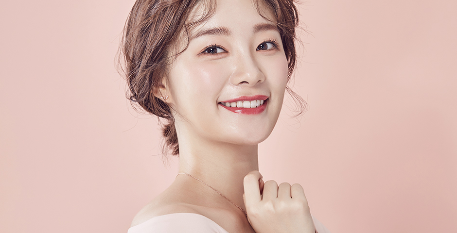
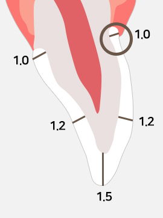
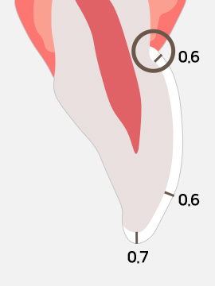
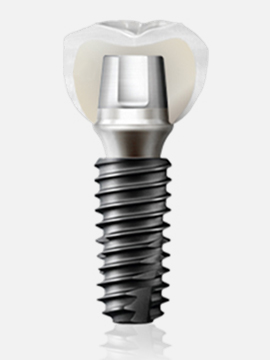
올세라믹이란 치아를 완전히 감싸 덮어 씌우는 방법으로
치아가 돌출되거나 깨짐, 충치 등으로 인해 심하게 손상된 치아를 가지런하게 만들어 주는 술식입니다.
안에 금속이 들어가지 않아 투명도가 높고 광택이 있어 자연치아와 매우 흡사해서 외모적으로 중요한 앞니에 많이 사용됩니다.
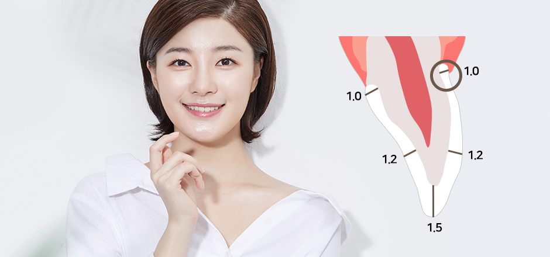
빛을 투과해
자연치아처럼 자연스러운
색상 재현
원하는 치아와 형태,
모양 색상까지
맞춤 제작
강도는 물론
내마모성과 열전도율이
우수함
매끄러운 도재로
잇몸과 생체친화성이
우수함
앞니 파절
및 손상
치아의
변색
배열이 안
좋은 경우
앞니 사이가
벌어진 경우
치아가 고르지
못한 경우
치아를 얇게 다듬은 후에 인조손톱 모양의 세라믹으로 새로운 모양과 색의 치아를 만들어
손톱 붙이듯 덧씌우는 시술로 치아의 삭제량이 적으며 심미적인 치아성형술로
주로 앞니에 사용하는 경우가 많습니다.
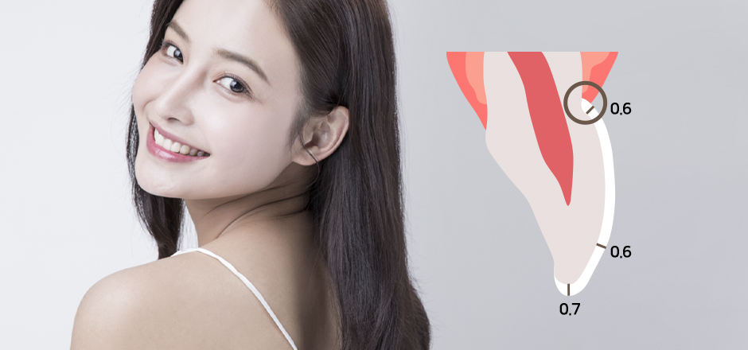
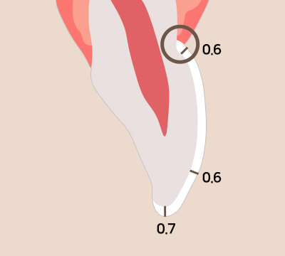
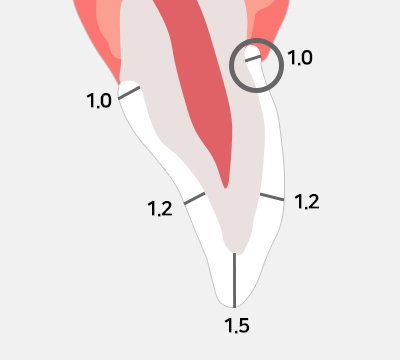
자연 치아
색상과 유사하여
심미적으로 우수
다른 보철
치료에 비해 치아
삭제량이 적음
레진보다
강도 및 마모성이
우수함
잇몸변색과
수축이
없음
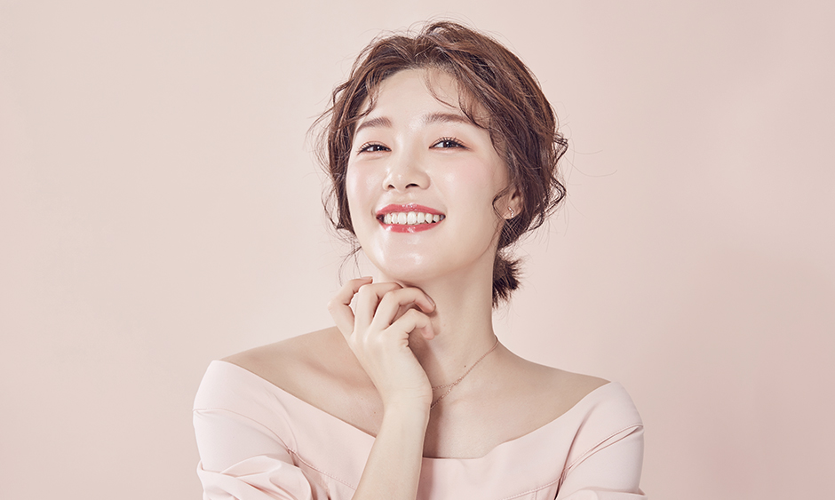
치아의
변색
배열이
안 좋은 경우
앞니 사이가
벌어진 경우
치아가 크거나
작은 경우
깨진
치아
치아를 완전히 덮어 씌우는 보철 시술 방식으로
인조다이아몬드 소재로 되어 강도가 가장 우수한 보철소재이며
자연치아와 구별할 수 없을 정도의 자연스러움으로 심미적으로 우수합니다.
단기간
깨끗한 치아 이미지가
필요하신 경우
세라믹보다 우수한
강도와 소재를
원하시는 경우
생체 친화적인
소재를 원하시는
경우
| PFM 크라운 | 크라운 종류 |
지르코니아 크라운 |
|---|---|---|
|
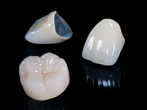 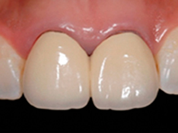 |
이미지 | 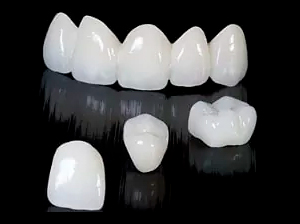 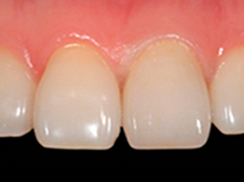 |
| 금속(열전도율, 알러지 가능성 있음) | 안쪽 재료 |
생체 친화적 재료(알러지 반응 없음) |
| 도자기(약한 강도로 파절 가능성 있음) | 겉쪽 재료 |
지르코니아(금과 유사한 강도로 장기적 사용 가능) |
| 잇몸라인에 금속 비침(낮은 심미성) | 심미성 | 시간이 경과해도 잇몸라인 치아색 유지(높은 심미성) |
| 안의 금속으로 빛 투과 안됨(낮은 투명도) | 빛 투과율 |
자연치아와 유사한 자연스러운 빛 투과(높은 투명도) |